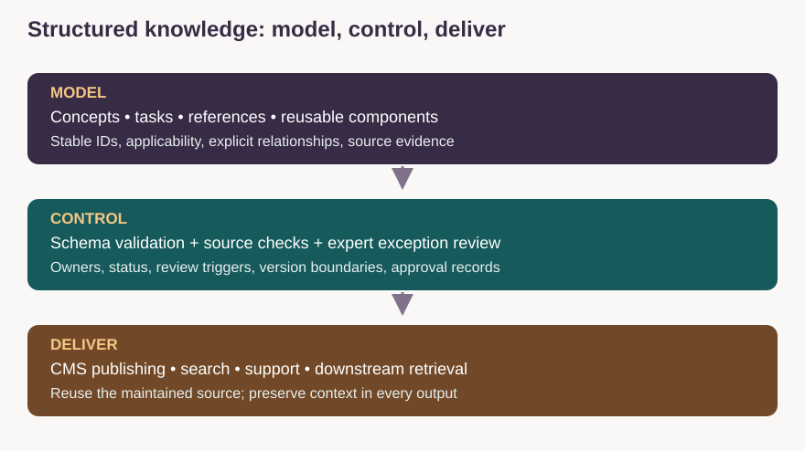

Documented experience · representative artifact reconstruction
Turning Legacy Documentation into Structured Knowledge
Defined an AI-assisted conversion workflow that reduced transformation time from approximately eight hours to four.
The problem
Legacy technical content was moving into a new content platform. A page-for-page migration would preserve old structures and make reuse, search, retrieval, and maintenance harder. The management problem was to define a target model, translate it into a repeatable workflow, and keep expert judgment where automation could introduce technical errors.
My mandate and contribution
I defined repeatable content patterns, target mappings, metadata and governance requirements, and the instructions and review boundaries for AI-assisted conversion. Engineering owned implementation architecture. Writers and subject-matter experts retained responsibility for technical truth and ambiguous mappings.
The result
The documented conversion workflow reduced transformation time from approximately eight hours to four. This is the outcome of the structured-content conversion initiative; it is not a search-time, support-volume, or RAG accuracy result.

Leadership decision
I used AI inside a defined architecture. The model accelerated repeatable refactoring; it did not decide what the content architecture should be or whether a new technical claim was true.
Content schema and relationship model
The blueprint below is a representative reconstruction for this portfolio, not an export of an employer’s internal schema. It shows the decisions and controls a KM leader must make.
| Type | Purpose and required fields | Relationship |
|---|---|---|
| Concept | What/why; definition, scope, explanation, applicable product/version, source IDs | EXPLAINS capability; RELATED_TO task |
| Task | How; purpose, prerequisites, steps, expected results, recovery, warnings | IMPLEMENTS capability; USES reference |
| Reference | Exact lookup; interface/field, type, requiredness, allowed values, examples | SPECIFIES API or configuration |
| Reusable component | Maintained warning, definition, example, or approved fact with scope | USED_BY topic; DEPENDS_ON source |
Metadata inheritance is an explicit rule
A task can inherit product or capability classification from a parent concept when the relationship and applicability are verified. It should not automatically inherit approval, access rights, legal scope, or product versions merely because it is a child. Preserve local overrides, validate conflicts, and record the resolved values used for publication and retrieval.
| Field | Operational decision |
|---|---|
| Stable topic and source IDs | Trace reuse, corrections, and dependencies |
| Product/version and audience | Select applicable guidance |
| Owner and review status | Route work and control publication eligibility |
| Review trigger and source revision | Respond to product changes and stale evidence |
| Access and usage constraints | Input to authenticated authorization; labels alone do not enforce it |
Governance and QA engine
- Validate required structure, field types, controlled values, links, terminology, accessibility, and examples where checks are dependable.
- Verify factual support and applicability; route ambiguous mappings, unsupported claims, and nonstandard exceptions to writers and subject-matter experts.
- Trigger review on source-contract changes, product releases, incidents, and ownership changes. Use review dates as a backstop, not the only freshness control.
- Capture recurring corrections and revise mappings, prompts, templates, and source guidance. Distinguish advisory warnings from publication blockers.
Migration and platform choices
Start with inventory and source authority, map legacy content to target types, convert a representative batch, validate exceptions, compare outputs, and expand only after owners can sustain the workflow. Evaluate CMS options against content modeling, reuse, versioning, permissions, review, integration, migration effort, accessibility, and total maintenance cost. An LMS is a delivery surface for learning; it should reference maintained knowledge rather than create an ungoverned second source.
Adjacent evidence: quality automation
In a separate quality initiative, repeatable editorial standards were translated into scalable checks while experts retained technical judgment. The program assessed 170M+ words monthly; quality improved from approximately 65% to 85%, and review time fell from four hours to one. These results support a distinct quality story and are not attributed to the conversion workflow.
Team leadership snapshot
I aligned content practitioners and engineering partners around target patterns, acceptance criteria, exceptions, and responsibilities. The managerial mechanism was clarity: reusable standards for routine work, named decision owners for ambiguity, and feedback that improved the system instead of repeating the same correction.
What I would measure next
Baseline task completion, failed searches, time to locate verified guidance, support contact reasons, reuse, and maintenance effort. Report cohort, period, definition, and attribution limits before publishing an impact percentage.